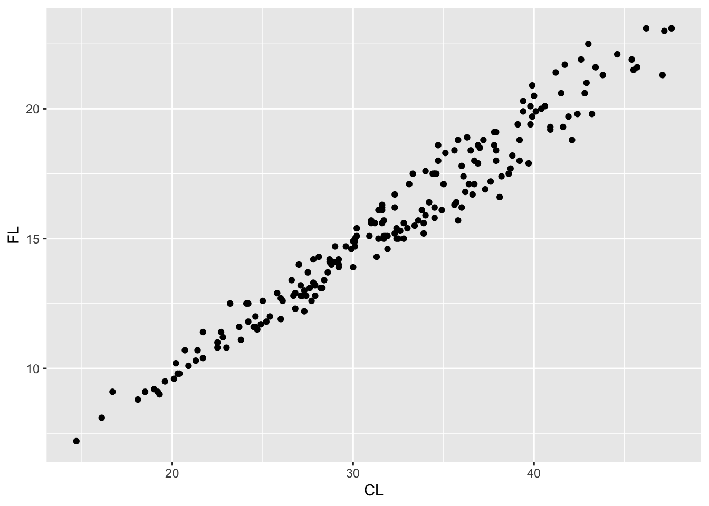
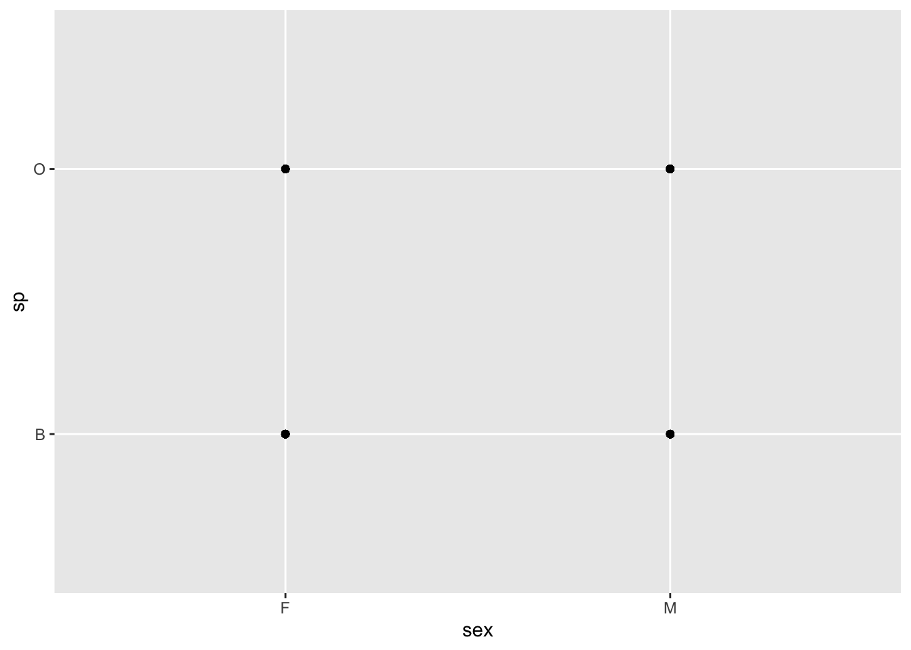
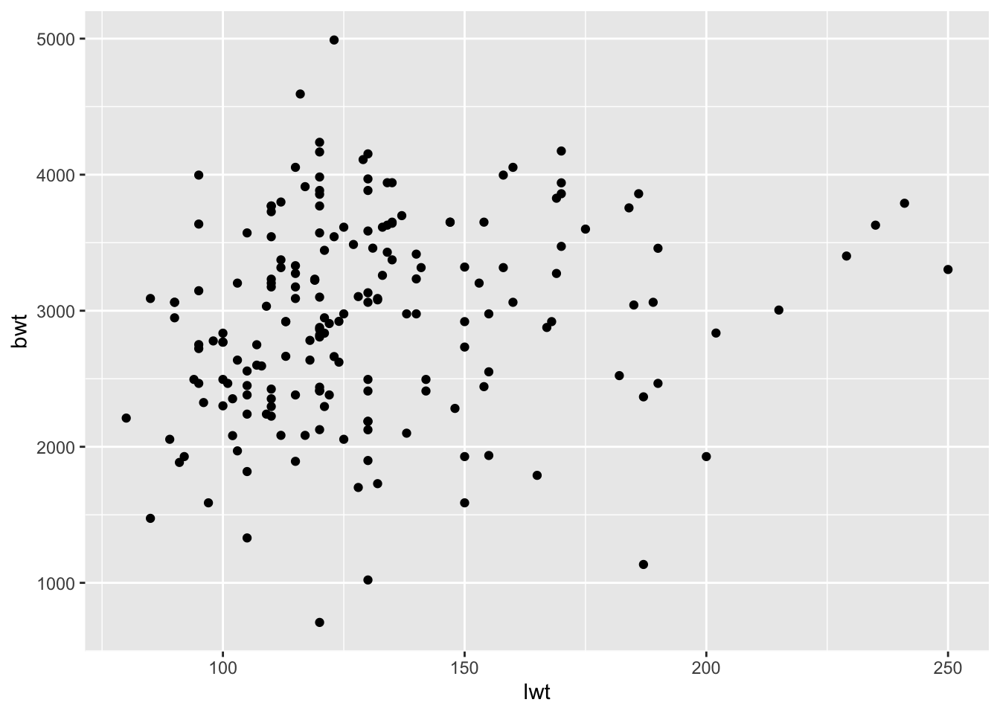
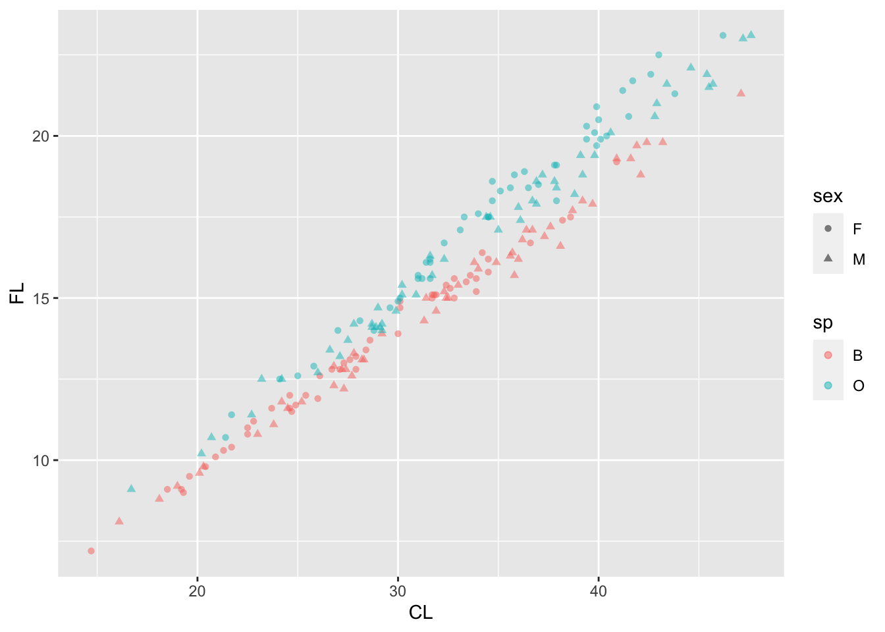
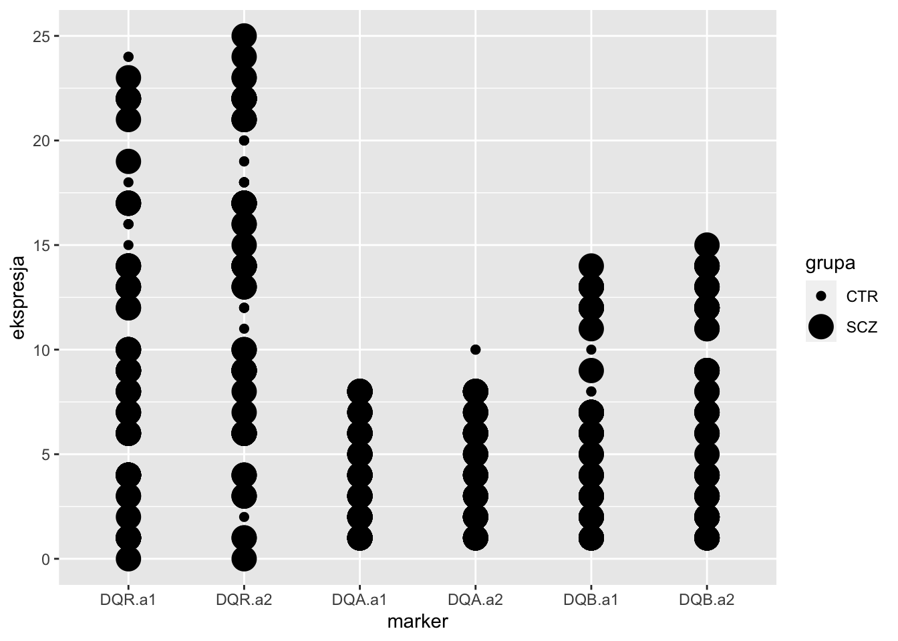
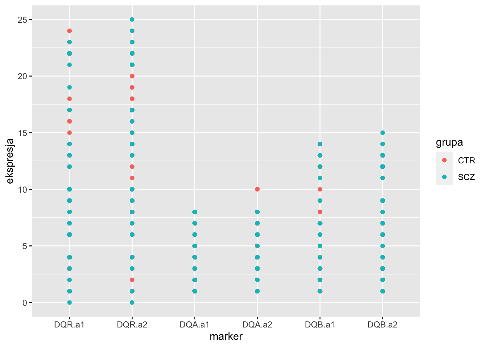
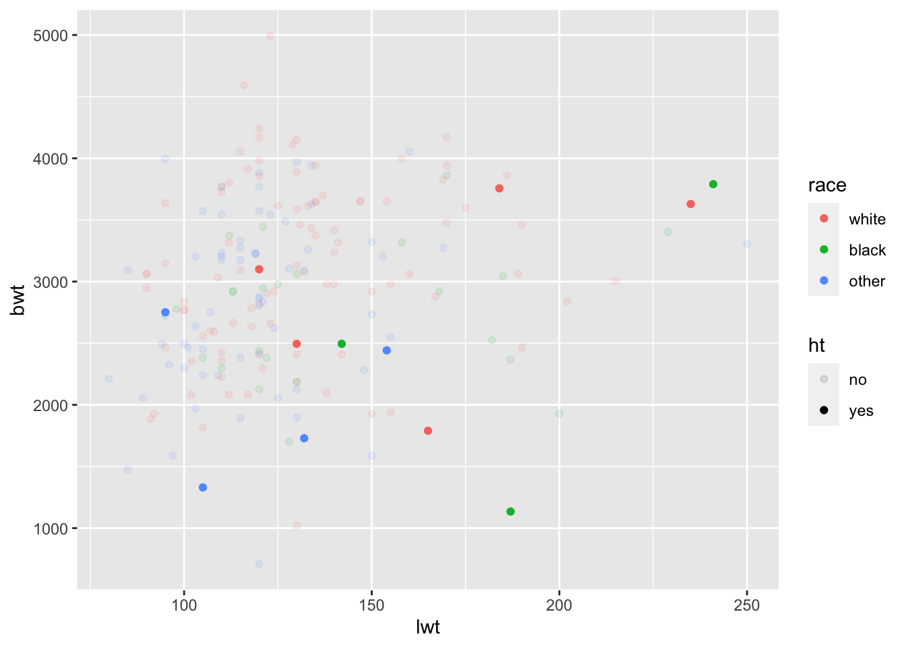

Zajęcia z R
Wizualizacje
Joanna Zyprych-Walczak
20 Styczeń 2023
Last updated: 2023-01-16
Checks: 7 0
Knit directory: zajecia/
This reproducible R Markdown analysis was created with workflowr (version 1.7.0). The Checks tab describes the reproducibility checks that were applied when the results were created. The Past versions tab lists the development history.
Great! Since the R Markdown file has been committed to the Git repository, you know the exact version of the code that produced these results.
Great job! The global environment was empty. Objects defined in the global environment can affect the analysis in your R Markdown file in unknown ways. For reproduciblity it’s best to always run the code in an empty environment.
The command set.seed(20230116) was run prior to running
the code in the R Markdown file. Setting a seed ensures that any results
that rely on randomness, e.g. subsampling or permutations, are
reproducible.
Great job! Recording the operating system, R version, and package versions is critical for reproducibility.
Nice! There were no cached chunks for this analysis, so you can be confident that you successfully produced the results during this run.
Great job! Using relative paths to the files within your workflowr project makes it easier to run your code on other machines.
Great! You are using Git for version control. Tracking code development and connecting the code version to the results is critical for reproducibility.
The results in this page were generated with repository version d161f87. See the Past versions tab to see a history of the changes made to the R Markdown and HTML files.
Note that you need to be careful to ensure that all relevant files for
the analysis have been committed to Git prior to generating the results
(you can use wflow_publish or
wflow_git_commit). workflowr only checks the R Markdown
file, but you know if there are other scripts or data files that it
depends on. Below is the status of the Git repository when the results
were generated:
Ignored files:
Ignored: .DS_Store
Ignored: .Rhistory
Ignored: zajecia/.Rhistory
Untracked files:
Untracked: prezentacja_joanna.key
Untracked: prezentacje/
Untracked: zajecia/kod.R
Untracked: zdjecia do prezentacji/
Unstaged changes:
Deleted: _workflowr.yml
Deleted: analysis/_site.yml
Deleted: analysis/about.Rmd
Deleted: analysis/index.Rmd
Deleted: analysis/license.Rmd
Deleted: code/README.md
Deleted: data/README.md
Deleted: docs/.nojekyll
Deleted: docs/about.html
Deleted: docs/index.html
Deleted: docs/license.html
Deleted: docs/site_libs/bootstrap-3.3.5/css/bootstrap-theme.css
Deleted: docs/site_libs/bootstrap-3.3.5/css/bootstrap-theme.css.map
Deleted: docs/site_libs/bootstrap-3.3.5/css/bootstrap-theme.min.css
Deleted: docs/site_libs/bootstrap-3.3.5/css/bootstrap.css
Deleted: docs/site_libs/bootstrap-3.3.5/css/bootstrap.css.map
Deleted: docs/site_libs/bootstrap-3.3.5/css/bootstrap.min.css
Deleted: docs/site_libs/bootstrap-3.3.5/css/cerulean.min.css
Deleted: docs/site_libs/bootstrap-3.3.5/css/cosmo.min.css
Deleted: docs/site_libs/bootstrap-3.3.5/css/darkly.min.css
Deleted: docs/site_libs/bootstrap-3.3.5/css/flatly.min.css
Deleted: docs/site_libs/bootstrap-3.3.5/css/fonts/Lato.ttf
Deleted: docs/site_libs/bootstrap-3.3.5/css/fonts/LatoBold.ttf
Deleted: docs/site_libs/bootstrap-3.3.5/css/fonts/LatoItalic.ttf
Deleted: docs/site_libs/bootstrap-3.3.5/css/fonts/NewsCycle.ttf
Deleted: docs/site_libs/bootstrap-3.3.5/css/fonts/NewsCycleBold.ttf
Deleted: docs/site_libs/bootstrap-3.3.5/css/fonts/OpenSans.ttf
Deleted: docs/site_libs/bootstrap-3.3.5/css/fonts/OpenSansBold.ttf
Deleted: docs/site_libs/bootstrap-3.3.5/css/fonts/OpenSansBoldItalic.ttf
Deleted: docs/site_libs/bootstrap-3.3.5/css/fonts/OpenSansItalic.ttf
Deleted: docs/site_libs/bootstrap-3.3.5/css/fonts/OpenSansLight.ttf
Deleted: docs/site_libs/bootstrap-3.3.5/css/fonts/OpenSansLightItalic.ttf
Deleted: docs/site_libs/bootstrap-3.3.5/css/fonts/Raleway.ttf
Deleted: docs/site_libs/bootstrap-3.3.5/css/fonts/RalewayBold.ttf
Deleted: docs/site_libs/bootstrap-3.3.5/css/fonts/Roboto.ttf
Deleted: docs/site_libs/bootstrap-3.3.5/css/fonts/RobotoBold.ttf
Deleted: docs/site_libs/bootstrap-3.3.5/css/fonts/RobotoLight.ttf
Deleted: docs/site_libs/bootstrap-3.3.5/css/fonts/RobotoMedium.ttf
Deleted: docs/site_libs/bootstrap-3.3.5/css/fonts/SourceSansPro.ttf
Deleted: docs/site_libs/bootstrap-3.3.5/css/fonts/SourceSansProBold.ttf
Deleted: docs/site_libs/bootstrap-3.3.5/css/fonts/SourceSansProItalic.ttf
Deleted: docs/site_libs/bootstrap-3.3.5/css/fonts/SourceSansProLight.ttf
Deleted: docs/site_libs/bootstrap-3.3.5/css/fonts/Ubuntu.ttf
Deleted: docs/site_libs/bootstrap-3.3.5/css/journal.min.css
Deleted: docs/site_libs/bootstrap-3.3.5/css/lumen.min.css
Deleted: docs/site_libs/bootstrap-3.3.5/css/paper.min.css
Deleted: docs/site_libs/bootstrap-3.3.5/css/readable.min.css
Deleted: docs/site_libs/bootstrap-3.3.5/css/sandstone.min.css
Deleted: docs/site_libs/bootstrap-3.3.5/css/simplex.min.css
Deleted: docs/site_libs/bootstrap-3.3.5/css/spacelab.min.css
Deleted: docs/site_libs/bootstrap-3.3.5/css/united.min.css
Deleted: docs/site_libs/bootstrap-3.3.5/css/yeti.min.css
Deleted: docs/site_libs/bootstrap-3.3.5/fonts/glyphicons-halflings-regular.eot
Deleted: docs/site_libs/bootstrap-3.3.5/fonts/glyphicons-halflings-regular.svg
Deleted: docs/site_libs/bootstrap-3.3.5/fonts/glyphicons-halflings-regular.ttf
Deleted: docs/site_libs/bootstrap-3.3.5/fonts/glyphicons-halflings-regular.woff
Deleted: docs/site_libs/bootstrap-3.3.5/fonts/glyphicons-halflings-regular.woff2
Deleted: docs/site_libs/bootstrap-3.3.5/js/bootstrap.js
Deleted: docs/site_libs/bootstrap-3.3.5/js/bootstrap.min.js
Deleted: docs/site_libs/bootstrap-3.3.5/js/npm.js
Deleted: docs/site_libs/bootstrap-3.3.5/shim/html5shiv.min.js
Deleted: docs/site_libs/bootstrap-3.3.5/shim/respond.min.js
Deleted: docs/site_libs/header-attrs-2.18/header-attrs.js
Deleted: docs/site_libs/highlightjs-9.12.0/default.css
Deleted: docs/site_libs/highlightjs-9.12.0/highlight.js
Deleted: docs/site_libs/highlightjs-9.12.0/textmate.css
Deleted: docs/site_libs/jquery-3.6.0/jquery-3.6.0.js
Deleted: docs/site_libs/jquery-3.6.0/jquery-3.6.0.min.js
Deleted: docs/site_libs/jquery-3.6.0/jquery-3.6.0.min.map
Deleted: docs/site_libs/navigation-1.1/codefolding-lua.css
Deleted: docs/site_libs/navigation-1.1/codefolding.js
Deleted: docs/site_libs/navigation-1.1/sourceembed.js
Deleted: docs/site_libs/navigation-1.1/tabsets.js
Deleted: output/README.md
Deleted: prezentacja_2023.Rproj
Note that any generated files, e.g. HTML, png, CSS, etc., are not included in this status report because it is ok for generated content to have uncommitted changes.
These are the previous versions of the repository in which changes were
made to the R Markdown (zajecia/analysis/wizualizacje.Rmd)
and HTML (zajecia/docs/wizualizacje.html) files. If you’ve
configured a remote Git repository (see ?wflow_git_remote),
click on the hyperlinks in the table below to view the files as they
were in that past version.
| File | Version | Author | Date | Message |
|---|---|---|---|---|
| html | a81ddcf | zjanna | 2023-01-16 | Build site. |
| html | e352416 | zjanna | 2023-01-16 | Dodanie plików |
| html | 7535b04 | zjanna | 2023-01-16 | Build site. |
| html | ebd2ddf | zjanna | 2023-01-16 | Zmiana treści strony |
| html | 0043cc5 | zjanna | 2023-01-16 | Build site. |
| html | 93e078c | zjanna | 2023-01-16 | Zmiana treści strony |
| html | 652ed4b | zjanna | 2023-01-16 | Build site. |
| html | 93d1c6c | zjanna | 2023-01-16 | Build site. |
| Rmd | 8ad8e54 | zjanna | 2023-01-16 | Zmiana treści strony |
| html | 8ad8e54 | zjanna | 2023-01-16 | Zmiana treści strony |
Wprowadzenie do ggplot2 - zadania
- Uruchom polecenie . Co widzisz?
- Wykonaj wykres punktowy zależności między zmiennymi i
- Co zobaczysz na wykresie punktowym zależności między zmiennymi i ? Dlaczego ten wykres jest bezużyteczny?
- Na podstawie danych z pakietu utwórz wykres punktowy opisujący zależność pomiędzy wagą urodzeniową dziecka, a ilością wizyt u lekarza w pierwszym trymestrze. Co możesz powiedzieć o tej zależności?
- Na podstawie danych stwórz zbiór danych w formacie long i nazwij go . Poszczególne zmienne nazwij jako: “grupa”, “id”, “marker”, “ekspresja”.6. Na podstawie danych dostępnych pod adresem stwórz zbiór danych w formacie long i nazwij go .
Wprowadzenie do ggplot2 - odpowiedzi
# zadanie 1
set.seed(123)
library(ggplot2)
library(MASS)
data(crabs)
ggplot(data = crabs)
| Version | Author | Date |
|---|---|---|
| 93d1c6c | zjanna | 2023-01-16 |
# zadanie 2
ggplot(data = crabs) + geom_point(aes(CL, FL))
| Version | Author | Date |
|---|---|---|
| 93d1c6c | zjanna | 2023-01-16 |
# zadanie 3
ggplot(data = crabs) + geom_point(aes(sex, sp))
| Version | Author | Date |
|---|---|---|
| 93d1c6c | zjanna | 2023-01-16 |
# zadanie 4
data(birthwt)
ggplot(data = birthwt) + geom_point(aes(lwt, bwt))
| Version | Author | Date |
|---|---|---|
| 93d1c6c | zjanna | 2023-01-16 |
# zadanie 5
library(reshape2)
library(gap)> Ładowanie wymaganego pakietu: gap.datasets> gap version 1.3-1data(hla)
hla.long <- melt(hla, id.vars = c("id", "y"), variable.name = c("marker"), value.name = "ekspresja")
colnames(hla.long)[1:2] <- c("grupa", "id")Mapowanie estetyk - zadania
Dla wykresu z zadania 2 poprzedniej sekcji:
- dodaj kolory, które będą uzależnione od gatunku krabów;
- dodaj przezroczystość na poziomie 0.5 dla wszystkich punktów;
- dodaj kształty, które będą uzależnione od płci krabów.
Na podstawie danych wykonaj wykres punktowy, który będzie pokazywał zależność pomiędzy markerami, a ekspresją. Dodaj do wykresu różne wielkości punktów w zależności od grupy. Czy wykres ten jest czytelny. Co możesz dodać/zmienić, aby był on bardziej przejrzysty?
Dla wykresu z zadania 4 poprzedniej sekcji uwzględnij zmienne i korzystając z wybranych przez Ciebie estetyk.
Na podstawie danych BodyTemp dostępnych pod adresem wykonaj wykres punktowy dla zmiennych HeartRate i Temperature z uwzględnieniem płci (zmienna Gender).
# zadanie 1
ggplot(data = crabs) + geom_point(aes(CL, FL, color = sp, shape = sex), alpha = 0.5)
| Version | Author | Date |
|---|---|---|
| 93d1c6c | zjanna | 2023-01-16 |
# zadanie 2
ggplot(data = hla.long) + geom_point(aes(marker, ekspresja, size = grupa))> Warning: Using size for a discrete variable is not advised.
| Version | Author | Date |
|---|---|---|
| 93d1c6c | zjanna | 2023-01-16 |
ggplot(data = hla.long) + geom_point(aes(marker, ekspresja, color = grupa))
| Version | Author | Date |
|---|---|---|
| 93d1c6c | zjanna | 2023-01-16 |
# zadanie 3
birthwt$race <- factor(birthwt$race, labels = c("white", "black", "other"))
birthwt$ht <- factor(birthwt$ht, labels = c("no", "yes"))
ggplot(data = birthwt) + geom_point(aes(lwt, bwt, color = race, alpha = ht))> Warning: Using alpha for a discrete variable is not advised.
| Version | Author | Date |
|---|---|---|
| 93d1c6c | zjanna | 2023-01-16 |
sessionInfo()> R version 4.2.1 (2022-06-23)
> Platform: x86_64-apple-darwin17.0 (64-bit)
> Running under: macOS Big Sur ... 10.16
>
> Matrix products: default
> BLAS: /Library/Frameworks/R.framework/Versions/4.2/Resources/lib/libRblas.0.dylib
> LAPACK: /Library/Frameworks/R.framework/Versions/4.2/Resources/lib/libRlapack.dylib
>
> locale:
> [1] pl_PL.UTF-8/pl_PL.UTF-8/pl_PL.UTF-8/C/pl_PL.UTF-8/pl_PL.UTF-8
>
> attached base packages:
> [1] stats graphics grDevices utils datasets methods base
>
> other attached packages:
> [1] gap_1.3-1 gap.datasets_0.0.5 reshape2_1.4.4 MASS_7.3-58.1
> [5] ggplot2_3.4.0 knitr_1.40 workflowr_1.7.0
>
> loaded via a namespace (and not attached):
> [1] tidyselect_1.2.0 xfun_0.34 bslib_0.4.1 colorspace_2.0-3
> [5] vctrs_0.5.0 generics_0.1.3 htmltools_0.5.3 yaml_2.3.6
> [9] utf8_1.2.2 rlang_1.0.6 jquerylib_0.1.4 later_1.3.0
> [13] pillar_1.8.1 glue_1.6.2 withr_2.5.0 DBI_1.1.3
> [17] plyr_1.8.7 lifecycle_1.0.3 stringr_1.4.1 munsell_0.5.0
> [21] gtable_0.3.1 evaluate_0.18 labeling_0.4.2 callr_3.7.3
> [25] fastmap_1.1.0 httpuv_1.6.6 ps_1.7.2 fansi_1.0.3
> [29] highr_0.9 Rcpp_1.0.9 promises_1.2.0.1 scales_1.2.1
> [33] formatR_1.12 cachem_1.0.6 jsonlite_1.8.3 farver_2.1.1
> [37] fs_1.5.2 digest_0.6.30 stringi_1.7.8 processx_3.8.0
> [41] dplyr_1.0.10 getPass_0.2-2 rprojroot_2.0.3 grid_4.2.1
> [45] cli_3.4.1 tools_4.2.1 magrittr_2.0.3 sass_0.4.2
> [49] tibble_3.1.8 whisker_0.4 pkgconfig_2.0.3 assertthat_0.2.1
> [53] rmarkdown_2.18 httr_1.4.4 rstudioapi_0.14 R6_2.5.1
> [57] git2r_0.30.1 compiler_4.2.1